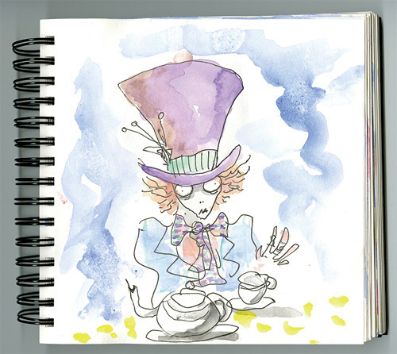

Fri, 15 Apr 2011 03:59:36 · creative · ideas · gehry · burton · designer · chef · architecture
How Creative Geniuses Works

Learn from the likes of Frank Gehry, Tim Burton, Grant Achatz, Michael Beirut and many others on how their creative process works to craft plethora of brilliant ideas. Ideas that inspire people. See how their genius minds works.